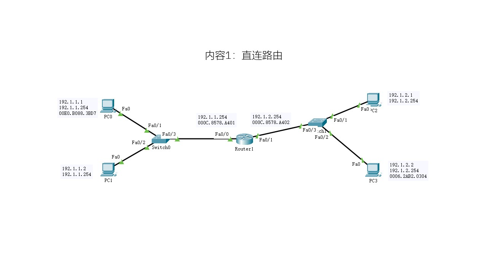
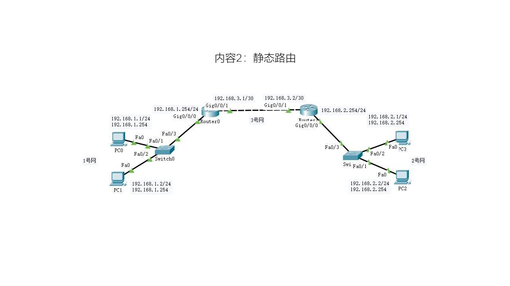
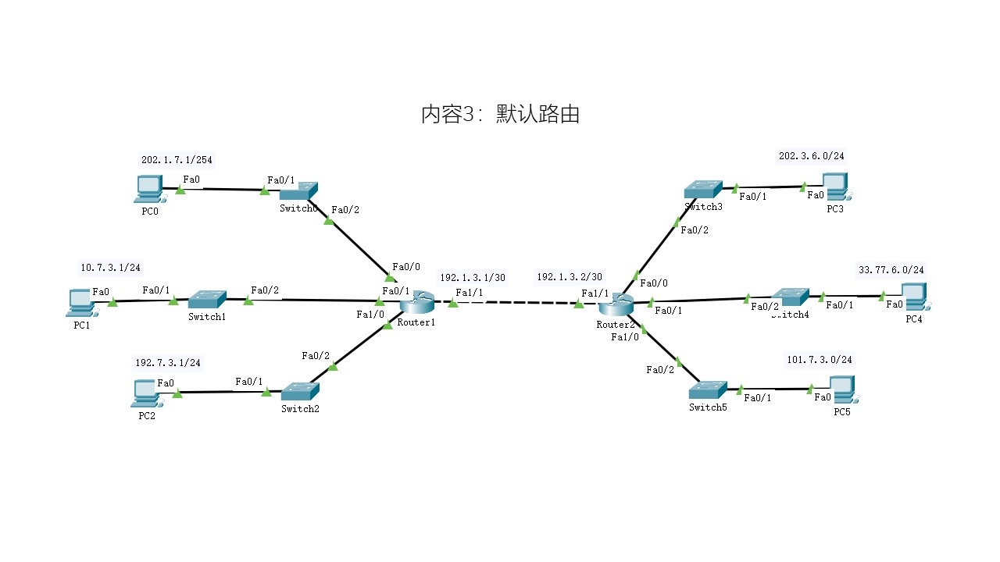

路由 Route
- 一、实验目的
- 1. 了解路由的基本类型
- 2. 掌握直连路由的配置
- 3. 掌握静态路由的配置
- 4. 掌握默认路由的配置
- 5. 进一步熟悉PT的使用
- 二、实验要求
- 根据给定的网络拓扑图，分别完成：
- 1. 网络拓扑的搭建；
- 2. IP地址的配置；
- 3. 路由器的端口配置和相应的路由配置；
- 4. 测试网络的连通性；
- 要求
- 1. 每个实验内容需要的设备名称和数量，包括扩展使用的模块；
- 2. 网络拓扑布局合理、标注信息清晰完整；
- 3. 关键配置有源码或截图；
- 4. 测试结果有截图；
- 三、实验过程与结果
- 1. 实验内容1：直连路由

- 2. 实验内容2：静态路由

- 3. 实验内容3：默认路由

- 四、实验分析
- 每个实验阶段的分析和异常处理。
- 五、心得体会
- 实验操作的感悟；不少于200字。
- 六、格式
- 1. A4纸张；正文字号：小四，中文宋体，英文Times New Roman；一级标题：宋体，四号，加粗；代码为英文Calibri。
- 2. 行距：单倍行距；段前1行，段后0.5行。
- 3. 图形和表格居中放置，图下面有图标识，表格上面有表头（皆5号宋体）。
- 4. 封面单独打印；内页双面打印。
- 5. 更多内容，请参照范文[点击下载]。
-

- 图1 厦工欢迎您
- 表1 Group_Appended表
-
id name gender unit cell 10001 xit female 54414 13513145200 10002 glu male 75716 13513145211 10003 pla male 75660 13114130011